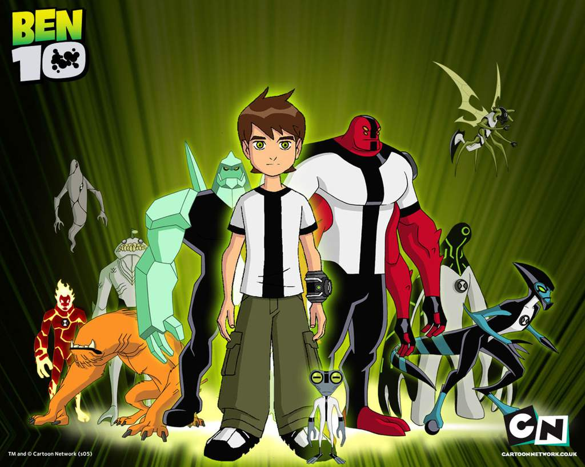

Ben 10 is a science fiction superhero themed cartoon in which a 10-year-old boy named Ben Tennyson comes across an alien watch-like device called the Omnitrix, which has the ability to transform him into various alien species with their own unique powers. Ben 10 also has later seasons featuring him as a teen with an even bigger roster of aliens.
What You'll Find on This Site
Whether you're a longtime fan or discovering the series for the first time, you’ll find pages that explore the characters, aliens, stories, and themes that make the franchise unforgettable.
The mainline Ben 10 franchise has 4 main shows starting with:
- Ben 10 (Classic):
- Classic journey of Ben 10 with the origins of his story featuring a 10-year-old boy as the main protagonist.
- Ben 10: Alien Force:
- The sequel to Classic. This features Ben as a 16-year-old after a time skip, now with an upgraded Omnitrix and a new roster of aliens.
- Ben 10: Ultimate Alien:
- The sequel to Alien Force. This shows Ben getting the Ultimatrix, which has the ultimate versions of his aliens.
- Ben 10: Omniverse:
- The sequel to Ultimate Alien. This offers even more new aliens and new plotlines.
This site focuses on the classic Ben 10 series.
If you would like more detailed information on the Ben 10 franchise, you can visit the Ben 10 Wiki. Ben 10 Wiki
If you want to discover more Ben 10 content and watch videos, you can visit the Cartoon Network YouTube Channel. Cartoon Network YouTube Channel
You can also visit the Official Ben 10 YouTube Channel where you can even find full episodes to watch. Official Ben 10 YouTube Channel